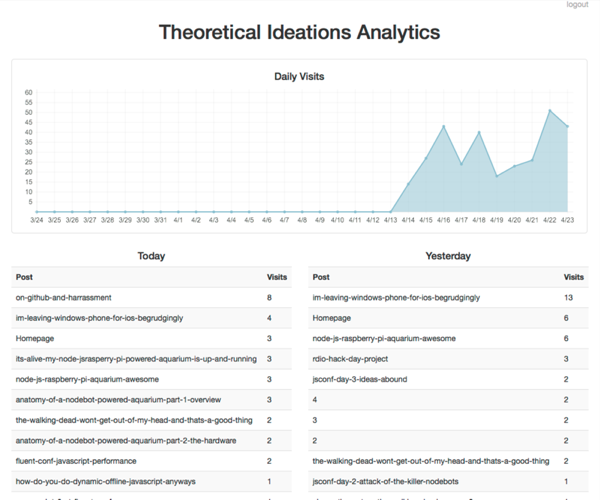

Time for something different, let’s talk web stuff! I mentioned a while ago that I switched from Wordpress to Ghost Blog. Overall I really like Ghost Blog so far, but there is one key feature that Ghost lacks that Wordpress has: site analytics. Yes I know I can use Google Analytics or something similar, but it doesn’t give me the detailed per-page information that I prefer. So I wrote my own analytics engine.
It’s called Simple Analytics, and you can find it on GitHub repository at https://github.com/bryan-m-hughes/simple-analytics.
I call it Simple Analytics because it’s meant to be pretty no-frills, and really is just a stop-gap solution until Ghost implements its dashboard feature sometime early next year. It’s been effective so far though. Here’s a screenshot of what it looks like:

One of the key reasons that I had for writing my own analytics server (aside from the fact that it was just fun), is that my blog server only has Node.js installed on it and I intend to keep it that way. I found plenty of PHP based solutions, but nothing written in Node.js that didn’t rely on a third party service. So that was my first requirement.
Another feature that I really liked from the Wordpress stats was that they were (more or less) real-time, unlike Google Analytics, so that was my second requirement.
My third requirement was that I wanted to make sure that only I could access my stats, which means I needed an authentication mechanism.
So with my requirements in place, I set out to write the analytics service. Since I’m the only one accessing the site analytics, that means there was no need to make sure that serving the analytics data didn’t need to be optimized, only storing data from page visits. As a result, the architecture sacrifices the performance of serving analytics data to make saving analytics data faster.
I know my traffic levels pretty well, and I also know that the Digital Ocean droplet hosting my blog has an SSD in it, meaning I get pretty good disk write performance. These things together means that I have no need for any sort of high-performance database storage, so I opted to just store everything in JSON files to keep things simple.
This approach does mean it won’t scale to needs beyond my own very easily, but I architected everything pretty carefully to avoid race conditions, resource contention etc so that it’s at least stable. Honestly Node.js makes this really easy given it’s single-threaded nature.
When someone visits my blog, their browser sends an XHR request back to my analytics server, which is running on the same Digital Ocean droplet as this blog itself. This small packet contains the page that was viewed, calculated on the client. The server stores the page, along with the server’s wall-time, into an in-memory data structure (just an object literal in JavaScript parlance).
Every time this in-memory object is modified, it serializes the data to a JSON file. The serialization mechanism is asynchronous for performance reasons. Since it’s asynchronous, I added a lock around it to make sure I didn’t write to the file while I was writing to the file. The file is treated as a back-up of in-memory contents, and so is only read on server start-up. As a result, this means it’s OK if it is temporarily out of sync with memory. There is a chance for data loss if the server crashes (this is where a proper database would help since file writing isn't atomic in Node.js), but it’s a risk I’m willing to take since this data isn’t mission critical. Plus, that’s what server backups are for!
Authentication is a home-grown mechanism. I could have used a third party module, but to be honest I kinda wanted to write my own to see what it’s like! To keep it simple and severely lessen the chance of a security breach, Simple Analytics supports only a single user, and that user is created off-line before the server is started for the first time. The username and password are salted and hashed with pbkdf2 using Node.js’ crypto module. When a user logs in, an access token is created and stored in a cookie in the user’s browser so that I don’t have to continually re-log in. I kept this code as simple and straightforward as possible to reduce the surface area for bugs and security holes. I actually spent the most time on this part of the project, even though it’s a relatively small part of the codebase.
Finally, there is the actual webpage itself. It’s served as a completely static page, so there is no Backbone, Angular, or Ember. I created a mustache template that the server fills in with data at request time. All analytics data is calculated at request time instead of caching to keep the code simple. Since I’m the only one requesting data, and I only do it a few times a day, request performance isn’t important. The graph at the top of the page is handled using Chart.js.
So that’s Simple Analytics. It took me about two weeks to write, and honestly was a lot of fun! I have plans to optimize the write performance of the server, but other than that I don’t really plan on doing much else to it. It has already handled a day where a blog post was retweeted by Ashe Dryden, which caused a (greatly appreciated) surge in traffic. Simple Analytics had no problems handling the surge, and I haven’t really had any interface annoyances that compel me to change anything.
If you want to check it out yourself, installation instructions are in the README on Gitlab.